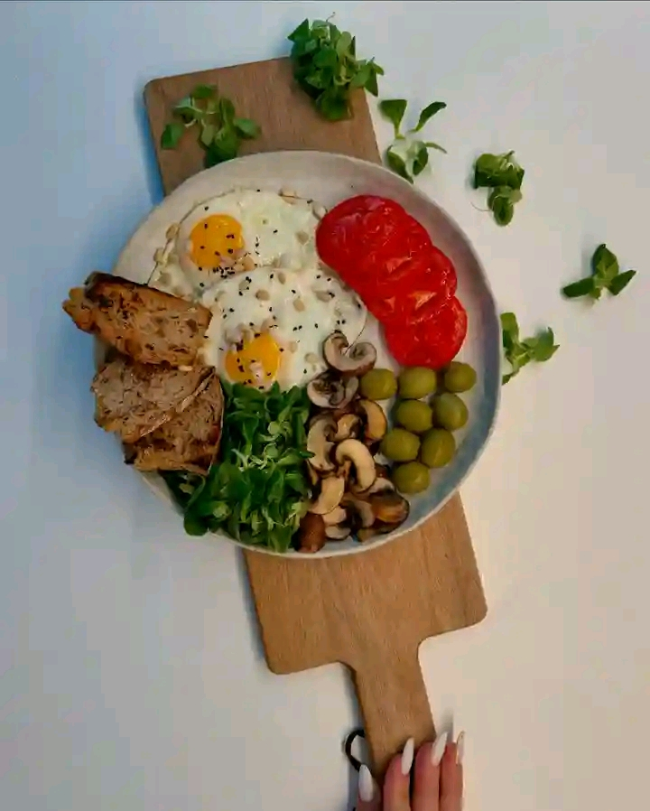

Introduction
Welcome to our ultimate guide on maintaining a healthy diet. This post will cover all the essential information, tips, and recipes to help you achieve a balanced and nutritious lifestyle.
What is a Healthy Diet?
A healthy diet involves eating a variety of foods that provide you with the necessary nutrients to maintain your health, feel good, and have energy. These nutrients include protein, carbohydrates, fat, water, vitamins, and minerals.
Benefits of a Healthy Diet
- Improved overall health and well-being
- Better weight management
- Enhanced mood and energy levels
- Reduced risk of chronic diseases
- Improved immune function
Components of a Healthy Diet
Fruits and Vegetables
Include a variety of fruits and vegetables in your diet. They are rich in vitamins, minerals, and fiber, and are low in calories.
Whole Grains
Choose whole grains like brown rice, quinoa, oats, and whole wheat bread. They provide more nutrients and fiber than refined grains.
Lean Proteins
Incorporate lean protein sources such as chicken, turkey, fish, beans, and legumes into your meals.
Healthy Fats
Include healthy fats from sources like avocados, nuts, seeds, and olive oil. Avoid trans fats and limit saturated fats.
Dairy or Dairy Alternatives
Choose low-fat or fat-free dairy products, or fortified plant-based alternatives like almond or soy milk.
Sample Meal Plan
Breakfast
Smoothie with spinach, banana, berries, and almond milk.
Lunch
Quinoa salad with mixed greens, chickpeas, cherry tomatoes, cucumber, and a lemon-tahini dressing.
Snack
Greek yogurt with a handful of mixed nuts.
Dinner
Grilled salmon with roasted sweet potatoes and steamed broccoli.
Healthy Recipes
Veggie Stir-Fry
This veggie stir-fry is a quick and easy way to include more vegetables in your diet.

Ingredients:
- 2 cups mixed vegetables (e.g., bell peppers, broccoli, carrots, snap peas)
- 1 tablespoon olive oil
- 2 cloves garlic, minced
- 1 tablespoon soy sauce
- 1 teaspoon sesame oil
- 1 teaspoon grated ginger
- Cooked brown rice or quinoa for serving
Instructions:
- Heat olive oil in a large skillet over medium-high heat.
- Add garlic and ginger, and sauté for 1-2 minutes until fragrant.
- Add mixed vegetables and stir-fry for 5-7 minutes until tender-crisp.
- Stir in soy sauce and sesame oil, and cook for an additional 2 minutes.
- Serve over cooked brown rice or quinoa.
Expert Tips for Maintaining a Healthy Diet
- Plan your meals: Prepare a weekly meal plan to ensure you have healthy options available.
- Stay hydrated: Drink plenty of water throughout the day.
- Practice mindful eating: Pay attention to your hunger and fullness cues, and avoid distractions while eating.
- Limit processed foods: Choose whole, unprocessed foods whenever possible.
- Balance your plate: Aim to fill half your plate with vegetables, a quarter with lean protein, and a quarter with whole grains.
Conclusion
Maintaining a healthy diet is essential for your overall well-being. By following the tips and recipes provided in this guide, you can create a balanced and nutritious eating plan that supports your health goals.